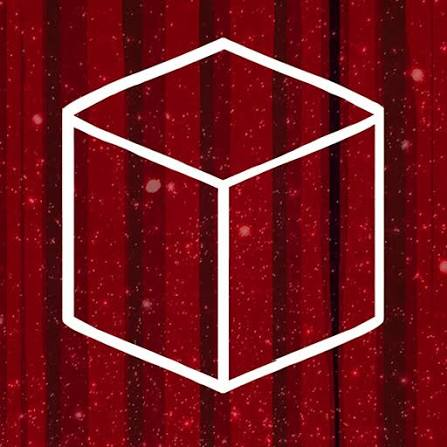

“Welcome to the theatre of your mind.”
Cube Escape: Theatre é o oitavo episódio da série Cube Escape, desenvolvido pela Rusty Lake e lançado em 11 de abril de 2016. A aventura acontece em um misterioso teatro onde o jogador precisa acompanhar uma série de apresentações e solucionar os enigmas escondidos em cada uma delas. O jogo continua a história de Rusty Lake e apresenta um elenco familiar em uma situação completamente diferente. Para avançar, o jogador precisa completar seis peças, cada uma trazendo novos puzzles e acontecimentos que ajudam a revelar mais sobre os mistérios do universo.
A aventura começa quando Dale Vandermeer chega a um misterioso teatro, onde é recebido por um elenco familiar ao universo de Rusty Lake. Sob os holofotes, seis apresentações precisam ser realizadas, e cada uma delas esconde objetos, pistas e enigmas que o jogador deve descobrir para continuar sua jornada. Enquanto as peças avançam, o teatro deixa de parecer apenas um local de apresentações e passa a revelar uma realidade cada vez mais estranha. As cenas estão relacionadas ao passado, presente e futuro de Dale, enquanto personagens conhecidos como Mr. Owl e Bob aparecem para aprofundar os mistérios que cercam Rusty Lake.